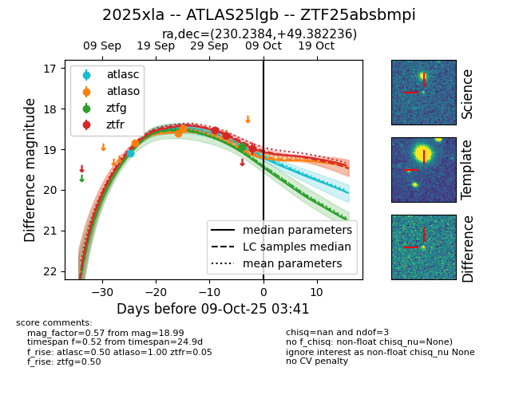
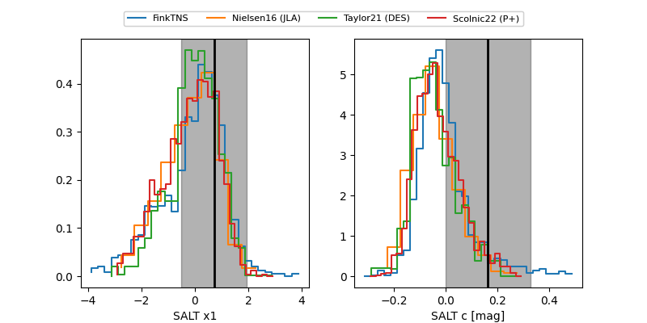

FINK: ZTF25absbmpi
Lasair: ZTF25absbmpi
ALeRCE: ZTF25absbmpi
TNS: 2025xla
YSE: 2025xla
ZTF25absbmpi (ztf,fink)
2025xla (tns,yse)
ATLAS25lgb (atlas)
equatorial (ra, dec) = (230.2384,+49.38224)
galactic (l, b) = (80.9800,+53.75821)


last atlasc=19.10, atlaso=18.48, ztfg=18.95, ztfr=18.99
1 atlasc, 3 atlaso, 1 ztfg, 3 ztfr detections